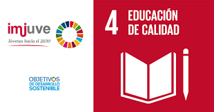

El ODS 4 (Objetivo de Desarrollo Sostenible 4)
se centra en garantizar una educación
inclusiva, equitativa y de calidad, y promover oportunidades de aprendizaje durante toda la vida para
todos.
Este objetivo busca mejorar el acceso a la educación en todos los niveles y para todas las personas, con
especial atención a las niñas y a los grupos vulnerables. Además, promueve la igualdad de género y la
equidad en la educación.
En la página de inicio de tu proyecto, podrías resaltar cómo tu iniciativa contribuye a estos objetivos.
Algunas ideas incluyen:

- Proporcionar recursos educativos accesibles.
- Fomentar la inclusión de estudiantes de diferentes contextos.
- Promover métodos de enseñanza innovadores.
¡Manos a la obra y a por un proyecto inspirador!
Acceso Universal a la Educación
Una de las cualidades fundamentales del ODS 4 es el acceso universal a una educación de calidad, sin
importar
el contexto socioeconómico, género o ubicación geográfica. La meta es garantizar que todos los niños y
jóvenes puedan acceder a la educación primaria y secundaria gratuita.
Además, busca mejorar el acceso a la educación superior, incluyendo la técnica y vocacional.
Tu proyecto podría apoyar esta meta ofreciendo recursos educativos accesibles en línea, diseñados para
estudiantes de comunidades remotas o con pocos recursos.
También podrías crear programas de becas para aquellos que no pueden acceder a instituciones
tradicionales.